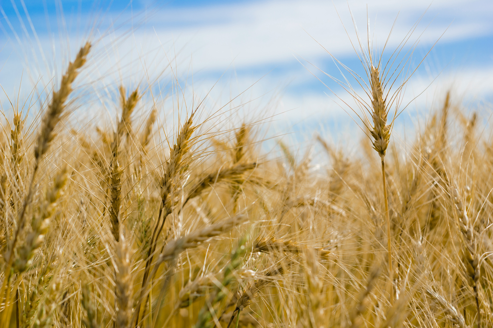
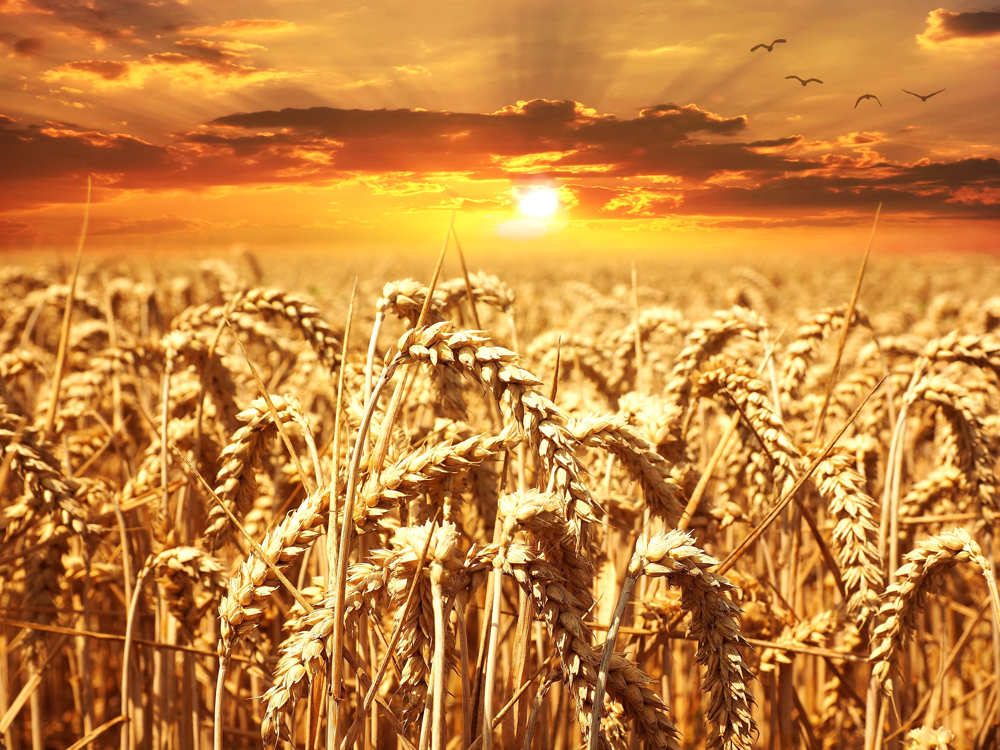
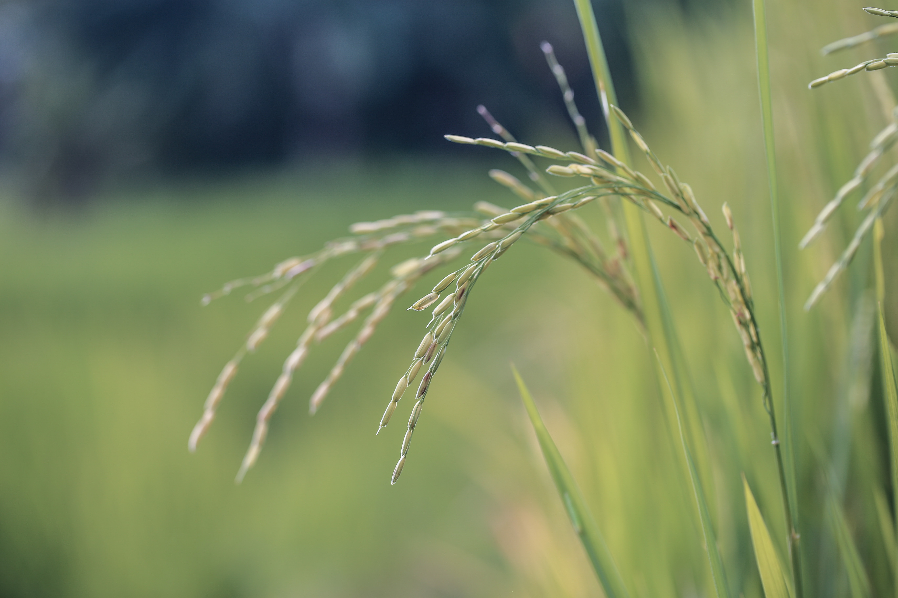
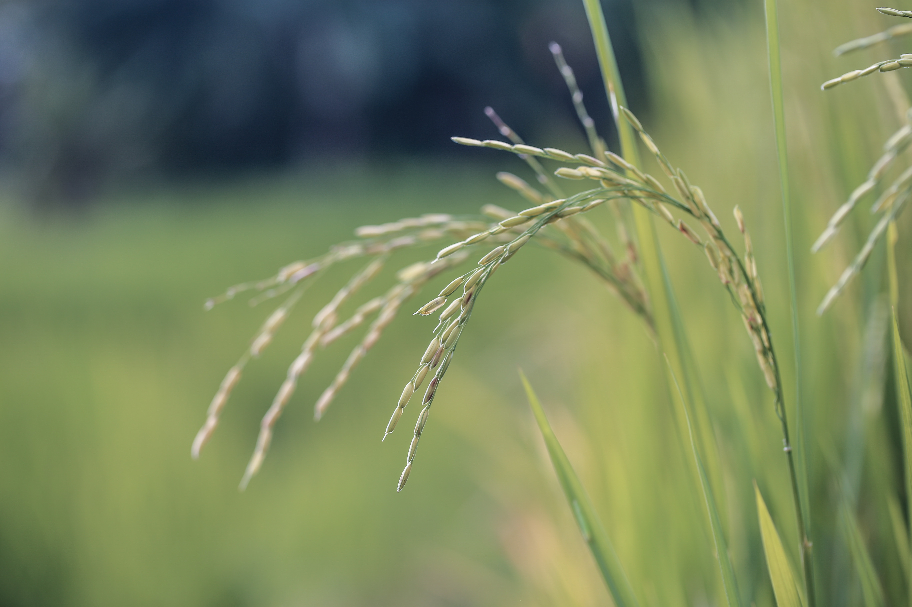
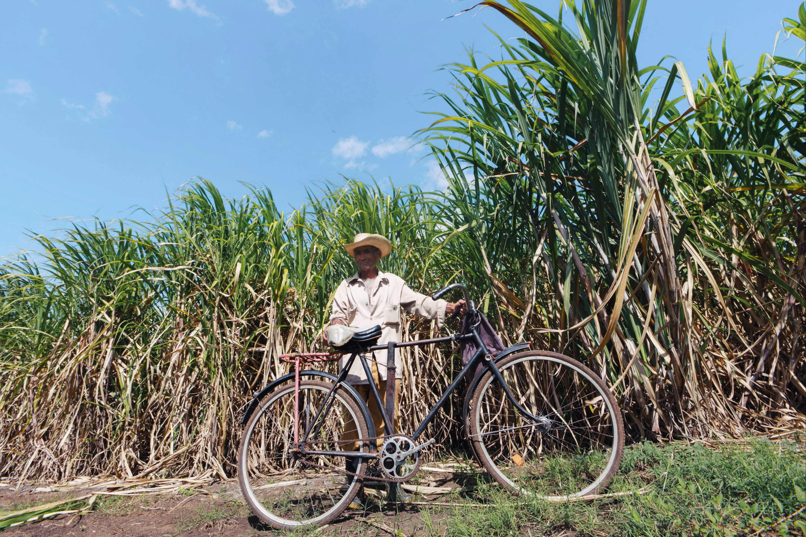
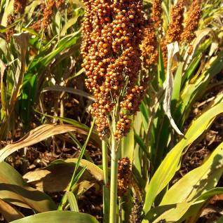
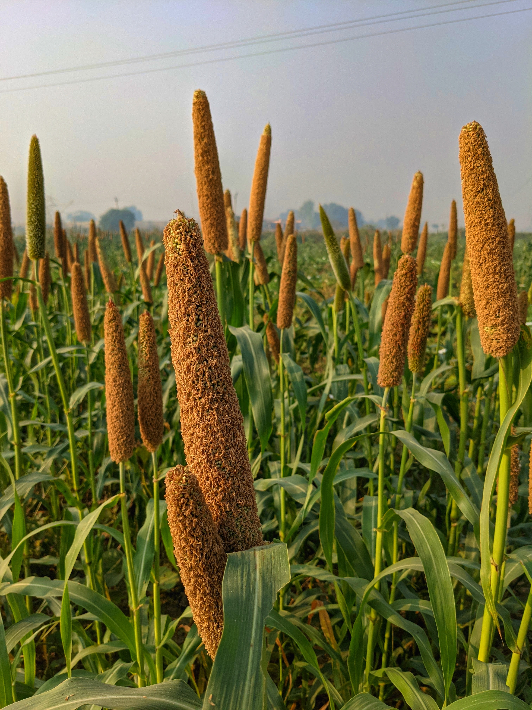
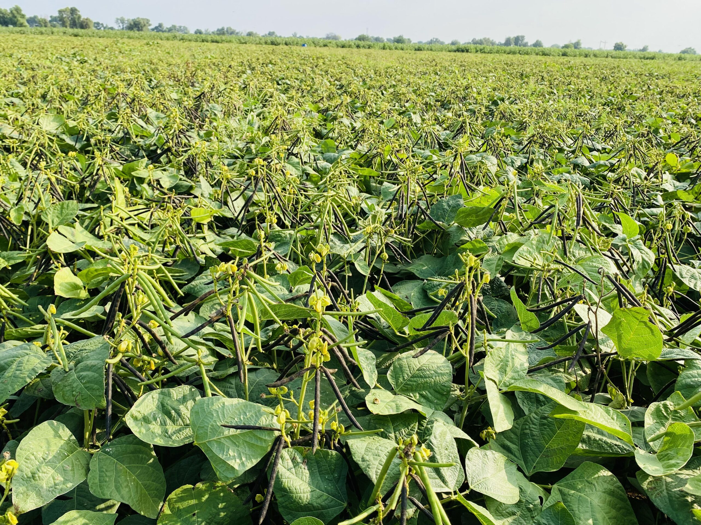
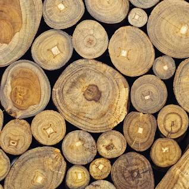

Welcome to Agriculture Assist!
Wheat
About Wheat is the main cereal crop in India. The total area under the crop is about 29.8 million hectares in the country. The production of wheat in the country has increased
significantly from 75.81 million MT in 2006-07 to an all time record high of 94.88 million MT in 2011-12. The productivity of wheat which was 2602 kg/hectare in 2004-05 has
increased to 3140 kg/hectare in 2011-12. The major increase in the productivity of wheat has been observed in the states of Haryana, Punjab and Uttar Pradesh. Higher area
coverage is reported from MP in recent years.Indian wheat is largely a soft/medium hard, medium protein, white bread wheat, somewhat similar to U.S. hard white wheat.

Wheat grown in central and western India is typically hard, with high protein and high gluten content. India also produces around 1.0-1.2 million tons of durum wheat, mostly
in the state of Madhya Pradesh. Most Indian durum is not marketed separately due to segregation problems in the market yards. However, some quantities are purchased by the
private trade at a price premium, mainly for processing of higher value/branded products.The production and productivity of Wheat crop were quite low, when India became
independent in 1947. The production of Wheat was only 6.46 million tonnes and productivity was merely 663 kg per hectare during 1950-51, which was not sufficient to feed
the Indian population.
The Country used to import Wheat in large quantities for fulfilling the needs of our people from many countries like USA under PL-480. The reasons of low production and
productivity of Wheat at that time was (a) the tall growing plant habit resulting in lodging, when grown under fertile soils, (b) the poor tillering and low sink capacity of
the varieties used, (c) higher susceptibility to diseases, (d) the higher sensitivity to thermo & photo variations, etc., resulting in poor adaptability, and (e) longer crop
duration resulting in a long exposure of plants to the climatic variations and insect pest / disease attacks.

The Government of India appointed a commission in 1961 to assess the feasibility of increasing the crop productivity under prevailing Indian ecological conditions. As result
of various steps taken by Govt. of India, the Wheat scenario in our country has completely changed. In the post Independence era, country used to import Wheat for our needs
but due to bumper increase in the production and productivity of Wheat in the 'Green Revolution' period in late sixties, our country became self dependent in Wheat production.
At present, country is producing much more excess Wheat than the requirement and Godowns are over-flooded with Wheat.
Rice
About
RiceOryza Sativa, it is believed, is associated with wet, humid climate, though it is not a tropical plant. It is probably a descendent of wild grass that was most likely
cultivated in the foothills of the far Eastern Himalayas. Another school of thought believes that the rice plant may have originated in southern India, then spread to the
north of the country and then onwards to China. It then arrived in Korea, the Philippines (about 2000 B. C.) and then Japan and Indonesia (about 1000 B. C.).
The journey of rice around the world has been slow, but once it took root it stayed and became a major agriculture and economic product for the people. In the Indian
subcontinent more than a quarter of the cultivated land is given to rice (20011-12). It is a very essential part of the daily meal in the southern and eastern parts of India.
 In the northern and central parts of the subcontinent, where wheat is frequently eaten, rice holds its own and is cooked daily as well as on festivals and special occasions.
History of Rice in IndiaIndia is an important centre of rice cultivation. The rice is cultivated on the largest areas in India. Historians believe that while the indica variety
of rice was first domesticated in the area covering the foothills of the Eastern Himalayas (i.e. north-eastern India), stretching through Burma, Thailand, Laos, Vietnam and
Southern China, the japonica variety was domesticated from wild rice in southern China which was introduced to India. Perennial wild rice still grow in Assam and Nepal.
It seems to have appeared around 1400 BC in southern India after its domestication in the northern plains. It then spread to all the fertile alluvial plains watered by rivers.
Some says that the word rice is derived from the Tamil word arisi.Climatic RequirementsIn India rice is grown under widely varying conditions of altitude and climate. Rice
cultivation in India extends from 8 to35ºN latitude and from sea level to as high as 3000 meters.

Rice crop needs a hot and humid climate. It is best suited to regions which have high humidity, prolonged sunshine and an assured supply of water. The average temperature
required throughout the life period of the crop ranges from 21 to 37º C. Maximum temp which the crop can tolerate 400C to 42 0C.Nutritional value of RiceRice is a nutritional
staple food which provides instant energy as its most important component is carbohydrate (starch). On the other hand, rice is poor in nitrogenous substances with average
composition of these substances being only 8 per cent and fat content or lipids only negligible, i.e., 1per cent and due to this reason it is considered as a complete food
for eating. Rice flour is rich in starch and is used for making various food materials. It is also used in some instances by brewers to make alcoholic malt.
Likewise, rice straw mixed with other materials is used to produce porcelain, glass and pottery. Rice is also used in manufacturing of paper pulp and livestock bedding.
composition and characteristics of rice is really broad and depends on variety and environmental conditions under which the crop is grown. In husked rice, protein content
ranges in between 7per cent to 12per cent. The use of nitrogen fertilizers increases the percentage content of some amino acids.
In the northern and central parts of the subcontinent, where wheat is frequently eaten, rice holds its own and is cooked daily as well as on festivals and special occasions.
History of Rice in IndiaIndia is an important centre of rice cultivation. The rice is cultivated on the largest areas in India. Historians believe that while the indica variety
of rice was first domesticated in the area covering the foothills of the Eastern Himalayas (i.e. north-eastern India), stretching through Burma, Thailand, Laos, Vietnam and
Southern China, the japonica variety was domesticated from wild rice in southern China which was introduced to India. Perennial wild rice still grow in Assam and Nepal.
It seems to have appeared around 1400 BC in southern India after its domestication in the northern plains. It then spread to all the fertile alluvial plains watered by rivers.
Some says that the word rice is derived from the Tamil word arisi.Climatic RequirementsIn India rice is grown under widely varying conditions of altitude and climate. Rice
cultivation in India extends from 8 to35ºN latitude and from sea level to as high as 3000 meters.

Rice crop needs a hot and humid climate. It is best suited to regions which have high humidity, prolonged sunshine and an assured supply of water. The average temperature
required throughout the life period of the crop ranges from 21 to 37º C. Maximum temp which the crop can tolerate 400C to 42 0C.Nutritional value of RiceRice is a nutritional
staple food which provides instant energy as its most important component is carbohydrate (starch). On the other hand, rice is poor in nitrogenous substances with average
composition of these substances being only 8 per cent and fat content or lipids only negligible, i.e., 1per cent and due to this reason it is considered as a complete food
for eating. Rice flour is rich in starch and is used for making various food materials. It is also used in some instances by brewers to make alcoholic malt.
Likewise, rice straw mixed with other materials is used to produce porcelain, glass and pottery. Rice is also used in manufacturing of paper pulp and livestock bedding.
composition and characteristics of rice is really broad and depends on variety and environmental conditions under which the crop is grown. In husked rice, protein content
ranges in between 7per cent to 12per cent. The use of nitrogen fertilizers increases the percentage content of some amino acids.
Sugarcane
About SugarcaneSugarcane
(Saccharum officinarum) family Gramineae (Poaceae) is widely grown crop in India. It provides employment to over a million people directly or indirectly besides contributing
significantly to the national exchequer. Sugarcane growing countries of the world lay between the latitude 36.7° north and 31.0° south of the equator extending from tropical
to subtropical zones.

Sugar cane originated in New Guinea where it has been known for thousands of years. Sugar cane plants spread along human migration routes to Asia and the Indian subcontinent.
Here it cross-bred with some wild sugar cane relatives to produce the commercial sugar cane we know today.Cultivation of sugarcane in India dates back to the Vedic period.
The earliest mention of sugarcane cultivation is found in Indian writings of the period 1400 to 1000 B.C. It is now widely accepted that India is the original home of Saccharum species.
 Saccharum barberi and Polynesian group of island especially New Guinea is the centre of origin of S. officinarum. It belongs to family Gramineae (Poaceae), class monocotyledons and
order glumaceae sub family panicoidae, tribe Andripogoneae and sub tribe saccharininea. The cultivated canes belong to two main groups: (a) thin, hardy north Indian types S.barberi
and S.Sinense and (b) thick, juicy noble canes Saccharum officinarum. Highly prized cane is S. officinarum.
Saccharum barberi and Polynesian group of island especially New Guinea is the centre of origin of S. officinarum. It belongs to family Gramineae (Poaceae), class monocotyledons and
order glumaceae sub family panicoidae, tribe Andripogoneae and sub tribe saccharininea. The cultivated canes belong to two main groups: (a) thin, hardy north Indian types S.barberi
and S.Sinense and (b) thick, juicy noble canes Saccharum officinarum. Highly prized cane is S. officinarum.
Mustard
India is fourth largest contributor of oilseeds and Rapeseed and mustard contributes about 28.6% in total oilseeds production. After soybean and palm oil, it is third important oilseed
in world. Mustard seeds and its oil is used for culinary purpose. Young leaves are used for vegetable purpose. Its oil cake is used for feeding cattle.
 Mustard-rapeseed groups includes Indian mustard, Brown and yellow sarson, raya and toria crop. Indian mustard is grown in Rajasthan, Madhya Pradesh, UP, Haryana and Gujarat also in some
areas of south like Andra Pradesh, Karnataka and Tamil Nadu. Yellow sarson is taken as rabi crop in Assam, Bihar, Orissa and West Bengal where as in Punjab, Haryana, UP and Himachal
Pradesh it is taken as catch crop. Earlier brown sarson was cultivated in most of the area now its area under cultivation is decreases and replaced by Indian mustard. Brown sarson has
two ecotypes Lotni and Toria. Toria is short duration crop sown under irrigated condition. Gobhi sarson is new emerging oilseed, it is long duration crop grown in Haryana, Punjab, and
Himachal Pradesh.
Mustard-rapeseed groups includes Indian mustard, Brown and yellow sarson, raya and toria crop. Indian mustard is grown in Rajasthan, Madhya Pradesh, UP, Haryana and Gujarat also in some
areas of south like Andra Pradesh, Karnataka and Tamil Nadu. Yellow sarson is taken as rabi crop in Assam, Bihar, Orissa and West Bengal where as in Punjab, Haryana, UP and Himachal
Pradesh it is taken as catch crop. Earlier brown sarson was cultivated in most of the area now its area under cultivation is decreases and replaced by Indian mustard. Brown sarson has
two ecotypes Lotni and Toria. Toria is short duration crop sown under irrigated condition. Gobhi sarson is new emerging oilseed, it is long duration crop grown in Haryana, Punjab, and
Himachal Pradesh.
Jowar
Jowar or sorghum is prized as a healthy alternative to refined flour or all-purpose flour, this fibre-rich millet is cultivated extensively in India. It is a flowering plant belonging
to the grass family Poaceae, and it is cultivated globally -Australia, Africa, Asia and Central America. It was a part of a regular meal plan for human for more than 5000 years across
the globe through civilizations.
Sorghum bicolour a common species of jowar, native to Africa is an important cereal crop, used mainly for food, animal fodder, making of alcoholic beverages and biofuels. Jowar is a
drought and heat-resistant plant which grows in an arid and dry region and forms the staple grain for poor and rural people. Also Read Ragi: Nutrition, Health Benefits, Uses For Skin
And Hair, Side Effects
Jowar is clad by several names such as durra, Egyptian millet, great millet, kafir corn, feterita, guinea corn, Sudan grass, milo, Juwar, Jwari in Marathi, Cholam in Tamil, Jolal in
Kannada and Jonnalu in Telugu.

Jowar is a towering plant growing over six feet tall, but many other varieties which are generally cultivated are dwarf breeds making it convenient for harvest. As it adapts well to
any extreme climatic conditions it is believed to maintain a stable nutrition profile. It is generally red and hard when it is ripe and dried after harvesting to increase the shelf -
life of the grain. It is used to make many traditional delights like porridge, bread, cakes, cookies, couscous and malted beverages. However, jowar porridge made with milk and water
is the easiest and nutritious dish.
Bajra
Pearl millet is well adapted to growing areas characterized by drought, low soil fertility, low moisture, and high temperature. It performs well in soils with high salinity or low pH.
Because of its tolerance to difficult growing conditions, it can be grown in areas where other cereal crops, such as maize or wheat, would not survive. Pearl millet is a summer annual
crop well-suited for double cropping and rotations.The grain and forage are valuable as food and feed resources in Africa, Russia, India and China.

Today pearl millet is grown on over 260,000 square kilometres (100,000 sq mi) of land worldwide. It accounts for about 50% of the total world production of millets. Pearl millet is the
most widely grown millet and is a very important crop in India and parts of Africa.
World production of millets has been stable during the 1980s. According to FAO, 39.4 million hectares (97 million acres) of millet were planted in 1987 with an average production of only
704 kilograms per hectare (628 lb/acre)
Cotton
Cotton is a soft, fluffy staple fiber that grows in a boll, or protective case, around the seeds of the cotton plants of the genus Gossypium in the mallow family Malvaceae. The fiber is
almost pure cellulose, and can contain minor percentages of waxes, fats, pectins, and water. Under natural conditions, the cotton bolls will increase the dispersal of the seeds.
The plant is a shrub native to tropical and subtropical regions around the world, including the Americas, Africa, Egypt and India. The greatest diversity of wild cotton species is found
in Mexico, followed by Australia and Africa.[1] Cotton was independently domesticated in the Old and New Worlds.[2]
 The fiber is most often spun into yarn or thread and used to make a soft, breathable, and durable textile. The use of cotton for fabric is known to date to prehistoric times; fragments
of cotton fabric dated to the fifth millennium BC have been found in the Indus Valley civilization, as well as fabric remnants dated back to 4200 BC in Peru. Although cultivated since
antiquity, it was the invention of the cotton gin that lowered the cost of production that led to its widespread use, and it is the most widely used natural fiber cloth in clothing today.
Current estimates for world production are about 25 million tonnes or 110 million bales annually, accounting for 2.5% of the world's arable land. India is the world's largest producer
of cotton. The United States has been the largest exporter for many years.
The fiber is most often spun into yarn or thread and used to make a soft, breathable, and durable textile. The use of cotton for fabric is known to date to prehistoric times; fragments
of cotton fabric dated to the fifth millennium BC have been found in the Indus Valley civilization, as well as fabric remnants dated back to 4200 BC in Peru. Although cultivated since
antiquity, it was the invention of the cotton gin that lowered the cost of production that led to its widespread use, and it is the most widely used natural fiber cloth in clothing today.
Current estimates for world production are about 25 million tonnes or 110 million bales annually, accounting for 2.5% of the world's arable land. India is the world's largest producer
of cotton. The United States has been the largest exporter for many years.
Moong
Climate and soil requirements
Mung bean is a warm season and frost-intolerant plant. Mung bean is suitable for being planted in temperate, sub-tropical and tropical regions. The most suitable temperature for mung bean's
germination and growth is 15-18 °C. Mung bean has high adaptability to various soil types, while the best pH of the soil is between 6.2 and 7.2. Mung bean is a short-day plant and long days
will delay its flowering and podding.

Harvest
The yield potential of mung bean is around 2.5 to 3.0 t/ha, however, usually due to the resistance to environmental stress and improper management, the average productivity for mung bean is
only 0.5 t/ha. Since the indeterminate flowering habit of mung bean, when facing the proper environmental conditions, there can be both flowers and pods in one mung bean plant, which make it
difficult for harvesting mung bean. The perfect harvesting stage is when 90% of pods' colour in one yield has been black. Mung bean can use a harverster for harvesting. It is important to
set up the header in case of over-threshing.[19][20]
Teak
Teak (Tectona grandis) is a tropical hardwood tree species in the family Lamiaceae. It is a large, deciduous tree that occurs in mixed hardwood forests. Tectona grandis has small,
fragrant white flowers arranged in dense clusters (panicles) at the end of the branches. These flowers contain both types of reproductive organs (perfect flowers). The large, papery
leaves of teak trees are often hairy on the lower surface. Teak wood has a leather-like smell when it is freshly milled and is particularly valued for its durability and water resistance.
The wood is used for boat building, exterior construction, veneer, furniture, carving, turnings, and other small wood projects.

Wood texture is hard and ring porous. The density varies according to moisture content: at 15% moisture content it is 660 kg/m3. The heartwood is yellowish to golden-brown.
Sapwood is whitish to pale yellowish brown. It can easily separate from heartwood.[citation needed] Teak darkens as it ages. There can be a large variation, depending on which region the
teak is from. Old growth has much tighter rings than new growth. There is a leather-like scent in newly cut wood.
Watermelon
Watermelon (Citrullus lanatus) is a flowering plant species of the Cucurbitaceae family and the name of its edible fruit. A scrambling and trailing vine-like plant, it is a highly
cultivated fruit worldwide, with more than 1,000 varieties.
Watermelon is grown in favorable climates from tropical to temperate regions worldwide for its large edible fruit, which is a berry with a hard rind and no internal divisions, and is
botanically called a pepo. The sweet, juicy flesh is usually deep red to pink, with many black seeds, although seedless varieties exist. The fruit can be eaten raw or pickled, and the
rind is edible after cooking. It may also be consumed as a juice or an ingredient in mixed beverages.
 Kordofan melons from Sudan are the closest relatives and may be progenitors of modern, cultivated watermelons.Wild watermelon seeds were found in Uan Muhuggiag, a prehistoric site
in Libya that dates to approximately 3500 BC. Watermelons were domesticated in north-east Africa, and cultivated in Egypt by 2000 BC, although they were not the sweet modern variety.
Sweet dessert watermelons spread across the Mediterranean world during Roman times.
Kordofan melons from Sudan are the closest relatives and may be progenitors of modern, cultivated watermelons.Wild watermelon seeds were found in Uan Muhuggiag, a prehistoric site
in Libya that dates to approximately 3500 BC. Watermelons were domesticated in north-east Africa, and cultivated in Egypt by 2000 BC, although they were not the sweet modern variety.
Sweet dessert watermelons spread across the Mediterranean world during Roman times.